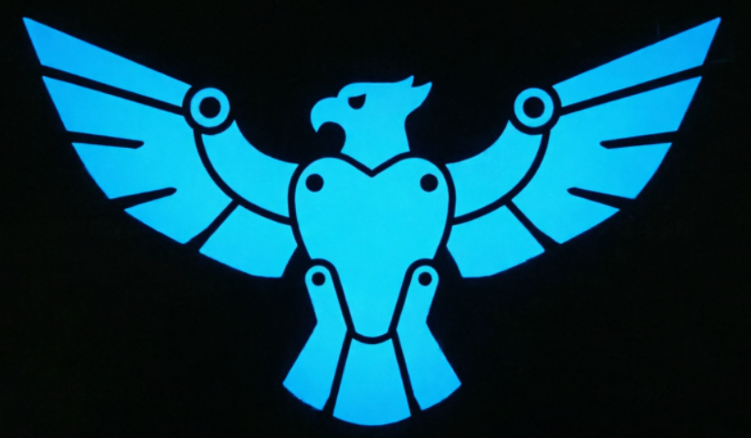

OmniLAMo
online
🌐
☰
🚀
OmniLAMo
Твой личный ИИ-помощник.
Общается, помогает с уроками и выполняет команды.
Начать
💡 После входа напиши /help
🎤
➤
📝
🔐
🔊
✕
❓ Помощь
➕ Добавить задание
📋 Мои задания
🗑️ Очистить чат
🚪 Выйти
🌐 Выбери язык
Закрыть
🔐 Добавить сайт
Ссылка на сайт
Название (как показывать)
Логин
Пароль
Сохранить
Закрыть
📋 Сохранённые сайты